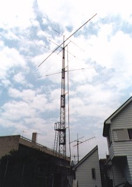
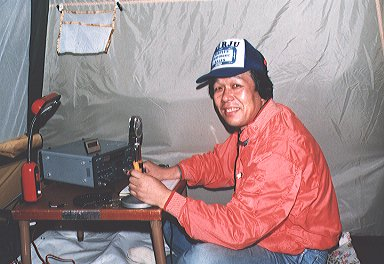

|
【 50MHz(6m Band)の特徴 】
VHF帯の中では最もHF帯に近い50MHz帯(6m)は、HFとVHFの両方の特徴を持ち合わせた、
他のバンドでは見られない伝搬が楽しめるバンドです。
今でもAMの電波が"残る"唯一のバンドでもあります。
VHF帯の50MHzは通常、地表波(GW)でのQSOとなりますが、ひとたびコンデションが上昇すると、
国内はもちろん外国とのDX-QSOも楽しめるのです。
最も"50MHzらしい"伝搬と言われるEs(スポラディック・E層)の時期には、国内のDX-QSOでにぎわいます。
いわゆる"Eスポ・シーズン"は5月から8月が最盛期です。
一方、50MHzでも最近は国内QSOに留まらず、外国とのQSOも盛んに行われるようになりました。
特に、11年周期といわれる太陽活動のサイクルのピークの前後には、6大陸、
100カントリーを超える国外とのDX-QSOも可能になってきています。
ヨーロッパ・アフリカなど、以前は"6m Band"の割当の無かった第１地域の各国に、
50MHzが正式に許可されたこともあって、ますます国際的なバンドとして見直されてきました。
ARRLが発行するDXCCに「50MHz DXCC」が新設され、"6m Band"も世界的な"DXバンド"としてHF帯と肩を並べることとなりました。
これによって、HF帯が中心だったDXペディションなどにも、50MHzの運用が加えられる様になったのです。
この様にいろいろ注目されている50MHzバンドですが、もちろんVHFであることには変わりありません。
太陽活動の衰退期には、海外からの電波はほとんど入感しなくなります。
HF帯に比べると、国外からの遠距離伝搬はコンディションに大きく影響され不安定なものですが、
これがまたスリルに富んでいて6mの魅力となっているのです。
太陽活動が低下して、国外QSOが不調な時期は逆にEsによる国内のQSOが活発になる時でもあります。
50MHzバンドの楽しみは途切れることはありません。
"Six meters the magic band"と言われるように、意外性のあるEsやF2による異常伝搬がなかったならば、
50MHzバンドが現在のように盛んになってはいなかったでしょう。
【50MHz帯の足跡】
50MHz帯が使われはじめた当初、このバンドの伝搬はGW（地表波）による見透し距離だけと考えられていました。
その後、運用する局が増えるに従って、GWでも100Kmをはるかに超える見透し外とのQSOが出来ることが判ってきました。
1953年7月14日にJA1FC-JA6BVが、初めてのEsによる記念すべきQSOに成功しました。
それ以来JA3-JA8、JA6-JA8などのQSOに成功、この頃を境にEsによる国内QSOが盛んに行われる様になったのです。
一方、日本人による初めての外国とのQSOは、1956年1月22日に行われたJA1AHS（東京）とオーストラリア・
クイーンズランドのVK4NGとのQSOでした。
太陽活動の最盛期の"サイクル19"といわれたこの時期は、記録的な国外DXとのQSOが相次ぎました。
LU9MA（南米・アルゼンチン）、K6EDY（北米）とのQSOに続き、1958年にはZS1SW（アフリカ・南アフリカ）とのQSOにも成功。
ヨーロッパを除く5大陸とこのサイクルでQSOできたのです。
50MHzバンドでの初のヨーロッパとのQSOは、1980年4月10日にQSOしたZB2BL（ジブラルタ）でした。
50MHzで初の国外QSOとなったVK4NGとのQSO成功から数え、24年目の全6大陸QSOの記録でした。
【 50MHzでのDX・QSOって？ 】
50MHzでのDX・QSOの定義はHF帯でのそれとは異なるものでした。
HFでは普通、国外の局をDXと呼んでいますが、地表波によるQSOが主流とされていた50MHzでは、
国内の局でも普段は届かない「見透し外」の局は立派なDX局でした。
国外とのQSOが珍しくなくなった最近では、HF同様にDXの定義も変わってきて“CQ DX”は、国外とのQSOの意味に変ってきました。
 |
50MHzの最長交信記録 |
 |
History of VHF in Japan(English) |

【 50MHzの電波伝搬 】
＝地表波伝搬＝
地表波が見透し距離を超えて遠方まで届くことがあります。
これは、電波が山などの縁りを通過するときに回折作用を受け、山の反対側に回り込むことにより到達します。
このような伝搬を「回折波伝搬」といいます。
発射された電波が地表面と上空の大気中の密度の違いによって屈折され、
地表面に沿って“勾(こう)”を描くように遠方まで届くことがあります。
このような伝搬を「屈折波伝搬」といいます。
このほかに、山や建物などで反射された電波によってQSO出来ることもあります。
＝対流圏伝搬＝
地表面と上空との間で空気が対流している部分（対流圏）で、屈折して遠方まで届く伝搬を「対流圏伝搬」といいます。
大気による屈折は気象条件にも大いに影響されます。
太陽により地表が暖められることによる温度変化で大気が影響されるためで、
季節や時間によってもその影響は変わってきます。
対流圏を伝搬する現象は「トロッポ」、「ダクト」などと呼ばれています。
＝電離層伝搬＝
◎ Es伝搬
Esによる遠距離QSOが出来るのは、何といっても6mバンドの特徴でしょう。
Es(スポラディックE層)は、地上90Km〜120KmのE層の中で突発的に発生する電子密度の高い電離層です。
Esでは、しばしば100MHz以上の電波も反射させることもあります。
50MHz帯より周波数の高い144MHz帯でも、回数こそ少ないもののEsによるQSOを経験することがあります。
Esによる伝搬距離は通常、1回の反射で300Km〜2000Km程度で、Esの最も反射効率の良い距離（強力に届く距離）は1000Km前後となります。
JA1エリアからJA6．8エリア、JA7エリアからJA3．4エリア、などが最適です。
逆に距離が500Km以下や、JA8とJR6(沖縄)などのように2000Kmを超えると強力な伝搬のチャンスは極端に少なくなります。
Es層による伝搬では、電波の減衰は非常に少ないので1000Km程度の伝搬でも比較的小電力で強力に遠距離まで届くのが特徴です。
10W程度のパワーで楽に国内とQSOできるのはこのためで、6mはEsを最も効果的に使えるバンドなのです。
Es伝搬でもときどき2000Kmを超える遠距離との伝搬を経験することがあります。
これは、2回以上（マルチホップ＝地上→電離層→地上→電離層→地上または、地上→電離層→電離層→電離層→地上）の複数の反射を繰り返し、
遠方に届くものです。
夏場の東南アジア方面や北米などとQSO出来るオープンはこの伝搬になります。
ときには、北米、ヨーロッパなど10,000Kmを超えるスリリングなDX-QSOを経験することが出来ます。
マルチホップの伝搬では反射による減衰や散乱が加わるため、送信電力の少ない電波は極端にQSOが困難になりますが、
近年はデジタルモード(JT65,FT8/FT4など)の急激な進歩で、夏場のEsの時期に従来では考えられないほどの伝搬で多くのDXが入感してQSOが可能になってきています。
◎ Ｆ２層伝搬
電離層の電子密度が大きいほど高い周波数の電波を反射します。
電離層の電子密度が小さいと電波は突き抜けて地球へ跳ね返ってこなくなります。
この電離層を突き抜ける限界の周波数を、臨海周波数といいます。
普通、50MHzのような高い周波数では電子密度の比較的大きいF2層でも突き抜けてしまいます。
太陽活動の影響などによって、この電子密度は変化します。
太陽活動の最小の年と最大の年とでは、電子密度は4倍も差があります。
これによって臨海周波数も約2倍になると言われています。
太陽活動が活発な時期には50MHzなどの高い周波数の電波がF2層で反射し、
HF帯同様に国外とのQSOができる様になるのはこのためです。
◎電離層散乱
電離層での跳躍距離内では、幾何学的に考えれば直接波以外には信号を受信できないはずですが、
実際には受信できます。
これは、電離層内にいろいろな原因で電子密度の乱れが発生することによって突入した電波が散乱を受け、
いろいろな方向に反射するために起こります。
このように乱反射された電波を「電離層散乱波」と呼んでいます。
散乱波による交信では、双方がアンテナを相対して行うのではなく、
双方が反射体の方向（同一方向）へアンテナを向けて交信することになります。
電離層での反射はE層（Es層）、F層（主にF2層）などが主なものです。
50MHzではこの乱反射（スキャッター）を利用したQSOはしばしば行われています。
太陽活動の活発な時期にF2層によって遠距離のDX-QSOが行われているときに、
同時にF2層の反射によって国内局同士がQSO出来るといった経験をします。
強力なEsが発生している時にも、普段は反射の範囲外であるごく近距離が乱反射で入感する事があります。
しかし、この電離層反射を利用するためには、ある程度の電力が必要となります。

50MHzでは野外で移動運用するのも楽しい
(JA1RJU/7 福島県田村郡仙台平(871m)移動運用)
このコーナーでは、50MHzバンドを簡単に紹介してきましたが、魅力溢れるこのバンドをこれからも大いに楽しんで下さい。
【JA1RJU 小笠原 一夫】 (2022年11月1日改）
|